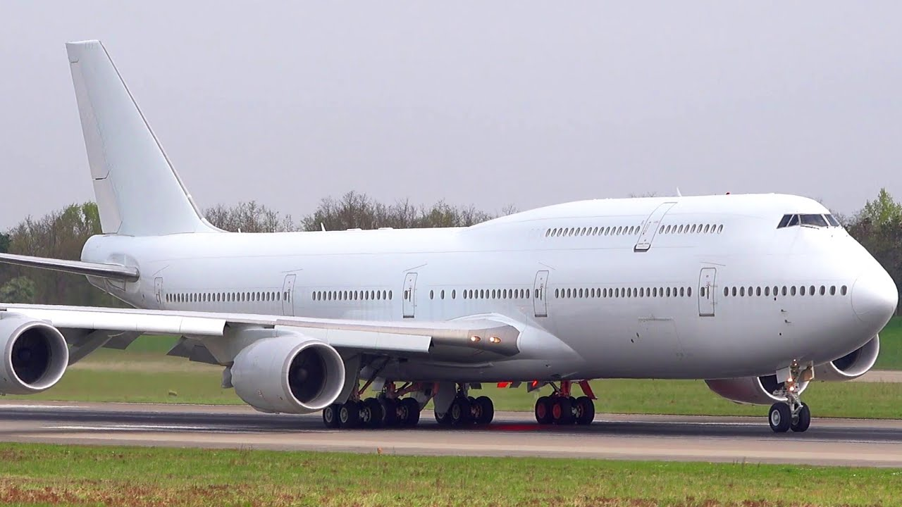
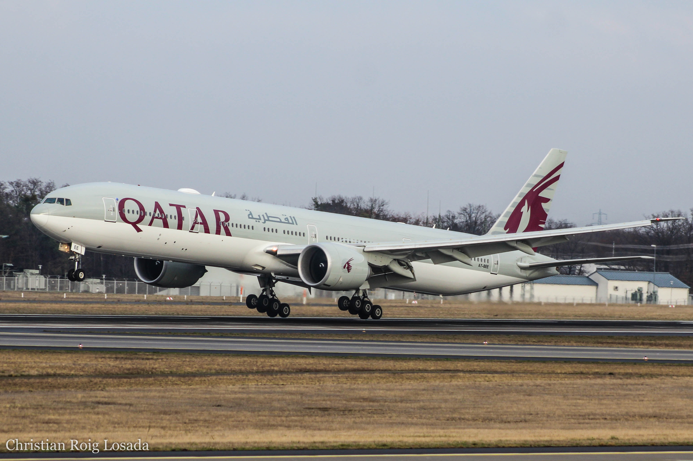
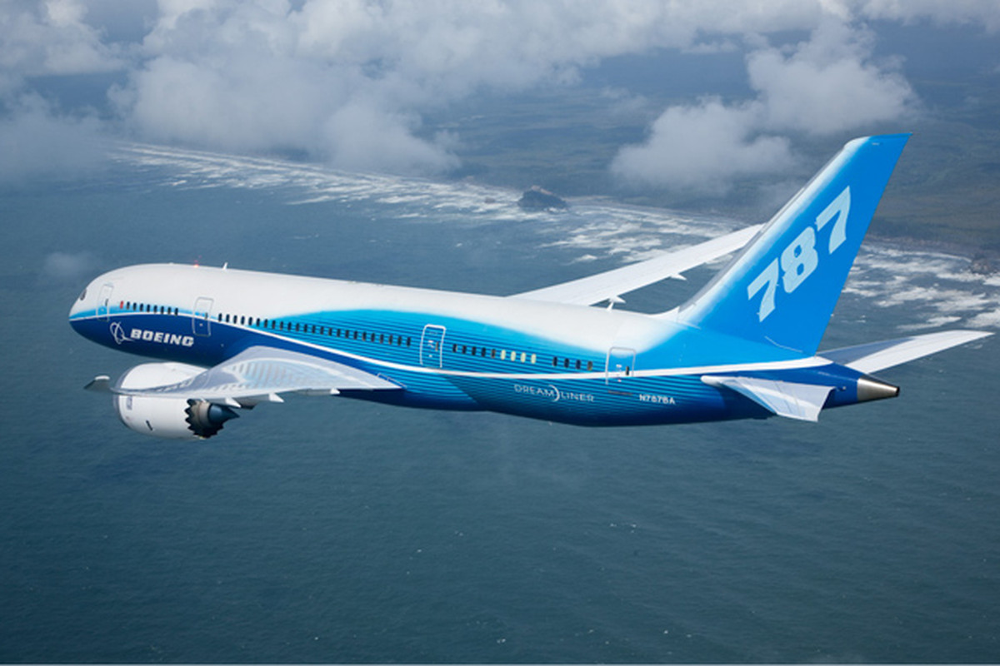
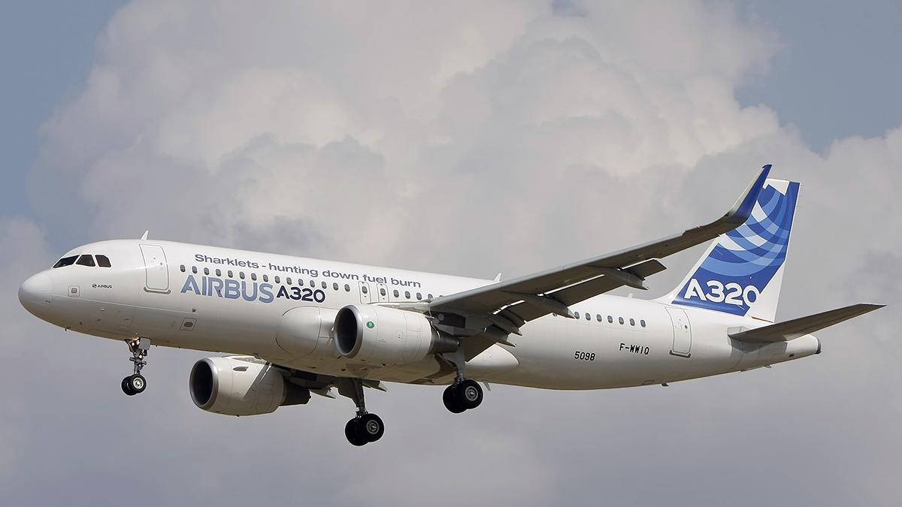
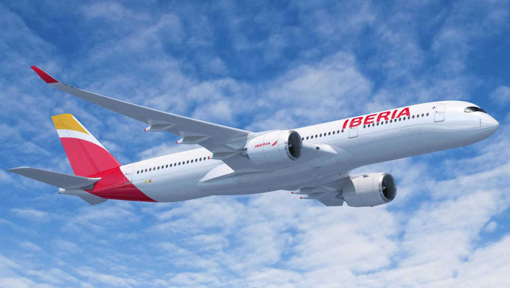
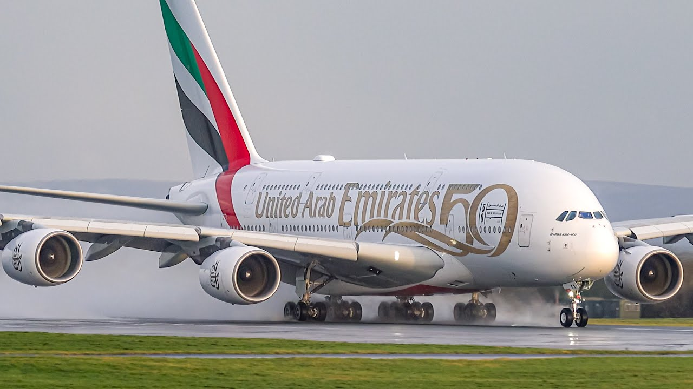

Principales tipos de aviones
1.El Boeing 747 es un avión comercial transcontinental de fuselaje ancho fabricado por Boeing. Se pronosticó que el 747 se quedaría obsoleto cuando se hubieran vendido las primeras 400 unidades, pero el modelo ha superado todas las expectativas y, pasadas esas críticas, la producción alcanzó las 1000 unidades en 1993. En diciembre de 2017 se habían construido 1542 aviones, con otras doce unidades de la variante 747-8F en espera de ser entregadas. La versión más reciente de este modelo, el 747-8, entró en servicio con Cargolux (versión de carga) el 12 de octubre de 2011, y con Lufthansa (versión de pasajeros) el 1 de junio de 2012.
2.El Boeing 777 es un avión comercial a reacción bimotor de largo alcance y fuselaje ancho fabricado por la compañía estadounidense Boeing. Durante la primera década de los años 2000, el 777 se ha convertido en uno de los modelos más vendidos de su fabricante. Debido al aumento del coste del combustible, las aerolíneas han adquirido este modelo de relativo bajo consumo como alternativa a otros aviones de fuselaje ancho y lo utilizan cada vez más para cubrir rutas transoceánicas de larga distancia. Los competidores directos al 777 en el mercado son el Airbus A330-300, el A340 y el A350.
3.El Boeing 787, apodado «Dreamliner», es un avión comercial de tamaño medio y fuselaje ancho desarrollado por el fabricante estadounidense Boeing. El 787 es capaz de aportar la autonomía de vuelo de los aviones de gran tamaño a los reactores de tamaño medio, y proporciona a las líneas aéreas una eficiencia sin precedentes en cuanto a consumo de combustible, con los consiguientes beneficios para el medio ambiente. Consume un 20 % menos de combustible que cualquier otro avión de su tamaño en misiones similares.5 Es de destacar la significativa reducción en su peso total, por el uso de materiales compuestos en la mayoría de su construcción: como referencia, el Boeing 787 pesa entre 13 600 y 18 150 kg menos que el Airbus A330-200.
4.El A320 fue el primer modelo de avión comercial con sistema de control de vuelo con mandos electrónicos digitales y también con palancas de control laterales. La primera versión del A320 se lanzó en marzo de 1984, siendo su primer vuelo el 22 de febrero de 1987, y puesto en servicio el 28 de marzo de 1988 con Air France. Posteriormente se desarrollaron el A321, que entró en servicio en 1994; el A319, que lo hizo en 1996; y el A318, en 2003. El A320 fue el primer modelo de avión comercial con sistema de control de vuelo con mandos electrónicos digitales y también con palancas de control laterales. En este aspecto ha habido un proceso de mejora continua desde su introducción.
5.El Airbus A350 es un avión comercial a reacción de fuselaje ancho construido por Airbus. El A350 se concibió originalmente como una variante del Airbus A330 con cambios menores, que estaba destinada a competir con el Boeing 787 Dreamliner y el Boeing 777. Sin embargo, este primer diseño fue rechazado de forma unánime por los clientes potenciales a los que se les presentó el proyecto, lo que obligó a Airbus a revisar su propuesta inicial, aunque desde las diferentes aerolíneas expresaron su apoyo a un rediseño completo del proyecto.
6.El Airbus A380 es un avión tetrarreactor fabricado por la empresa europea Airbus Es, hasta el momento, el avión de pasajeros más grande del mundo. Se trata de la primera aeronave de reacción con dos cubiertas a lo largo de todo su fuselaje.
